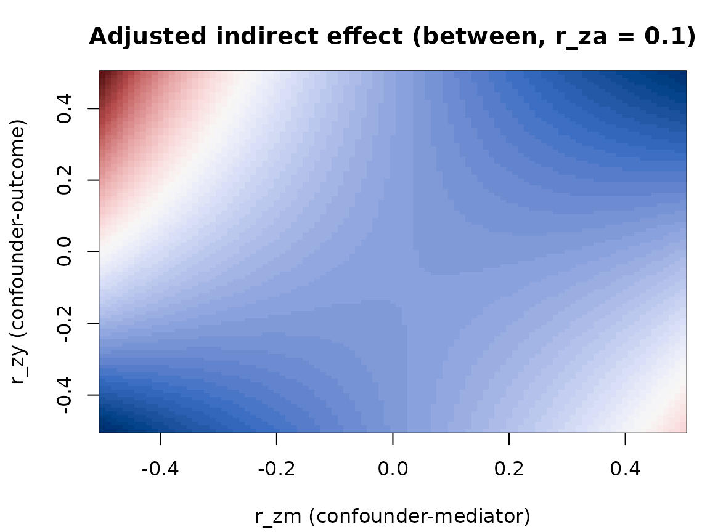

Sensitivity to an Omitted Confounder in Multilevel Mediation
RMediation Development Team
Source:vignettes/omitted-confounder-sensitivity.Rmd
omitted-confounder-sensitivity.RmdWhat the function does
A mediation estimate is only as credible as the assumption that
nothing unmeasured confounds the mediator-outcome relation.
ml_omitted_confounder() asks how much that assumption could
matter in a two-level (1-1-1) design: treatment A, mediator
M and outcome Y are all measured at level 1,
and the effects are split into a between-cluster and a within-cluster
part. It follows Tofighi and Kelley (2016).
You describe a hypothetical standardized confounder Z by
three correlations:
| Parameter | Meaning |
|---|---|
r_za |
correlation of Z with the treatment |
r_zm |
correlation of Z with the mediator |
r_zy |
correlation of Z with the outcome |
For each combination on a grid, the function returns the indirect
effect after adjusting the a path and the b
path for Z: a = a* - d_MZ * d_ZA and
b = b* - d_YZ * s_ZM, where a* and
b* are your unadjusted estimates. The adjusted indirect
effect is a * b.
Inputs
For each level, supply the two unadjusted paths and the covariance
matrix of A, M and Y at that
level (or the correlation matrix and standard deviations):
ml_omitted_confounder(
between = list(a = 0.3, b = 0.4, cov = S_between),
within = list(a = 0.2, b = 0.5, cov = S_within),
r_za = c(0, 0.1, 0.3)
)Rows and columns follow var_order (default
c("A", "M", "Y")). Supply at least one level.
A small example
R <- matrix(c(1, .3, .2,
.3, 1, .4,
.2, .4, 1), 3)
res <- ml_omitted_confounder(
between = list(a = 0.3, b = 0.4, cor = R, sd = c(1, 1, 1)),
r_za = c(0, 0.1)
)
res
#> Omitted-confounder sensitivity (Tofighi & Kelley, 2016)
#> =======================================================
#> Unadjusted indirect effect:
#> between 0.1200
#> Screen: pd
#> Points with a non-positive-definite augmented matrix are NA; use
#> screen = "none" to reproduce the published tables.
#> Adjusted indirect effect by level and r_za:
#> between r_za = 0 ab_adj 0.0488 to 0.2761 (admitted 10201 of 10201)
#> between r_za = 0.1 ab_adj 0.0441 to 0.3463 (admitted 10201 of 10201)
#> Assumption: the covariance of the level-2 random slopes of a and b is zero.summary() adds, for each panel, how many grid points
reverse the sign of the indirect effect and the weakest confounder
(smallest r_zm^2 + r_zy^2) that does so:
invisible(summary(res))
#> Omitted-confounder sensitivity: summary
#> Ranges of the adjusted indirect effect:
#> level r_za min max argmin_r_zm argmin_r_zy argmax_r_zm argmax_r_zy
#> between 0.0 0.04882 0.2761 -0.5 -0.5 0.5 -0.5
#> between 0.1 0.04411 0.3463 -0.5 -0.5 -0.5 0.5
#> n_admitted n_total
#> 10201 10201
#> 10201 10201
#>
#> Points where the adjusted effect changes sign relative to the unadjusted effect
#> (weakest = flipping point with the smallest r_zm^2 + r_zy^2):
#> level r_za n_flip share_flip weakest_r_zm weakest_r_zy
#> between 0.0 0 0 NA NA
#> between 0.1 0 0 NA NAplot() draws the adjusted indirect effect over the
r_zm by r_zy grid, with the zero contour;
type = "region" also draws the boundary of the admissible
region:
plot(res, r_za = 0.1, type = "region")
as.data.frame(res) returns the full grid for your own
summaries.
Reproducing the published example
Tofighi and Kelley’s supplementary materials print the between and
within covariance estimates of the empirical example, in the order
m, y, x, to three decimals.
Passing var_order = c("M", "Y", "A") tells the function
that order.
SW <- matrix(c(.351, .167, .062,
.167, .474, .096,
.062, .096, .793), 3)
SB <- matrix(c(.649, .475, -.001,
.475, .526, -.024,
-.001, -.024, .207), 3)
paper <- ml_omitted_confounder(
between = list(a = 0.024, b = 0.784, cov = SB),
within = list(a = 0.086, b = 0.433, cov = SW),
r_za = c(0, 0.1, 0.3), screen = "none",
var_order = c("M", "Y", "A")
)
printed <- data.frame(
printed_min = c(.017, -.087, -.372, .017, .011, -.016),
printed_max = c(.032, .152, .447, .085, .121, .226)
)
knitr::kable(
cbind(paper@ranges[, c("level", "r_za", "min", "max")], printed),
digits = 4
)| level | r_za | min | max | printed_min | printed_max |
|---|---|---|---|---|---|
| between | 0.0 | 0.0170 | 0.0319 | 0.017 | 0.032 |
| between | 0.1 | -0.0872 | 0.1518 | -0.087 | 0.152 |
| between | 0.3 | -0.3729 | 0.4462 | -0.372 | 0.447 |
| within | 0.0 | 0.0168 | 0.0846 | 0.017 | 0.085 |
| within | 0.1 | 0.0111 | 0.1210 | 0.011 | 0.121 |
| within | 0.3 | -0.0161 | 0.2258 | -0.016 | 0.226 |
The computed endpoints agree with the printed ones to within about 0.001; the remaining differences come from the three-decimal rounding of the published covariances.
Things to know
-
The default screen is stricter than the paper. A
grid point is admissible only when the augmented correlation matrix of
A,M,YandZis positive definite, equivalentlyr2 < 1in the returned grid. Withscreen = "pd"(the default) other points areNA. The published endpoints cover the whole grid, so reproducing them needsscreen = "none". With the example above, the default shrinks the between-level ranges:
pd <- ml_omitted_confounder(
between = list(a = 0.024, b = 0.784, cov = SB),
r_za = 0.3, var_order = c("M", "Y", "A")
)
none <- ml_omitted_confounder(
between = list(a = 0.024, b = 0.784, cov = SB),
r_za = 0.3, screen = "none", var_order = c("M", "Y", "A")
)
rbind(
pd = unlist(pd@ranges[, c("min", "max", "n_admitted", "n_total")]),
none = unlist(none@ranges[, c("min", "max", "n_admitted", "n_total")])
)
#> min max n_admitted n_total
#> pd -0.2957761 0.3475489 8289 10201
#> none -0.3728657 0.4462128 8289 10201-
Your
aandbneed not equal the covariance-implied values. The published example does not. The function subtracts a covariance-derived bias term from the values you supply; it does not refit anything. -
The covariance between the level-2 random slopes of
aandbis taken to be zero, as in the published illustration. -
Singular points return
NA, and a panel with no admissible points hasNAranges andn_admitted = 0. - This is a sensitivity analysis, not an estimate. It shows how large a confounder would have to be to change a conclusion; it cannot tell you whether such a confounder exists.
Reference
Tofighi, D., & Kelley, K. (2016). Assessing omitted confounder bias in multilevel mediation models. Multivariate Behavioral Research, 51(1), 86-105. https://doi.org/10.1080/00273171.2015.1105736